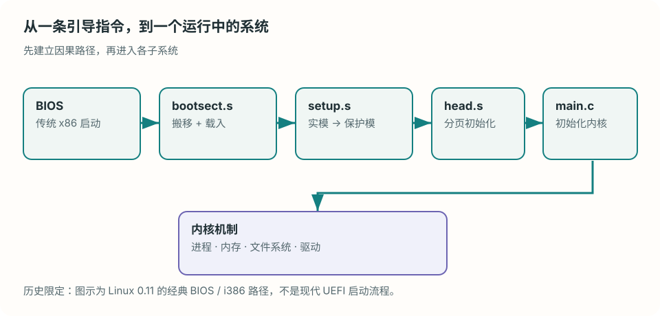

Linux的诞生
UNIX/MINIX/GNU背景 · 从0.00到1.0版本演进 · 关键人物与趣闻 · 为什么从0.11学起
阅读章节 →从一张引导扇区到分页机制，从系统调用到文件系统。这是一份按执行路径组织的中文 Linux 0.11 源码阅读地图：先提出问题，再沿着代码、地址与数据流找到答案。
以 Linux 0.11 为历史基线；现代实现单独标注
不要先背 API 名称。先建立“硬件如何把控制权交给内核”的因果链，再研究内核为进程提供了哪些抽象。
前十篇已按“现象 → 图解 → 源码 → 可复现实验 → 局限”重新组织。第 11–28 章保留原有内容，后续逐篇审校。
没有匹配的章节，请更换关键词。
从历史、源码地图和复现实验进入机器启动的第一条指令。
UNIX/MINIX/GNU背景 · 从0.00到1.0版本演进 · 关键人物与趣闻 · 为什么从0.11学起
阅读章节 →14个源码目录解读 · 宏内核vs微内核 · 编译产物vmlinux · RTFSC读源码方法论
阅读章节 →Bochs模拟器安装配置 · 内核镜像与磁盘准备 · bochsrc逐行解读 · QEMU+GDB备选方案
阅读章节 →CPU加电与BIOS流程 · bootsect.S源码精读 · 实模式编程要点 · INT 0x13踩坑故事
阅读章节 →setup.S获取硬件信息 · 进入保护模式CR0.PE · head.S分页初始化 · A20门历史包袱
阅读章节 →建立内核初始化、特权级、调度与系统调用的共同模型。
main.c初始化全景图 · 各子系统初始化顺序 · move_to_user_mode · init()第一个进程
阅读章节 →段描述符与GDT/LDT · Ring0-3特权级保护 · 两级页表地址翻译 · TSS硬件任务切换
阅读章节 →x86中断向量表 · IDT与门描述符 · 8259A中断控制器 · asm.s通用中断入口
阅读章节 →int 0x80全流程追踪 · system_call.s源码 · sys_call_table调用表 · 参数传递与安全拷贝
阅读章节 →task_struct数据结构 · schedule()调度算法 · switch_to()任务切换 · jiffies时钟滴答
阅读章节 →fork()写时复制机制 · execve()加载程序 · exit()与wait()回收 · 僵尸进程踩坑故事
阅读章节 →信号数据结构与位图 · 发送/递送/处理流程 · sigframe用户栈帧 · sigaction可移植性
阅读章节 →理解页表、缓冲区、inode、路径解析和管道。
物理内存布局分区 · mem_map页框管理 · get_free_page分配 · 线性地址空间布局
阅读章节 →两级页表结构详解 · 线性地址翻译示例 · do_wp_page写时复制 · 页表不一致幽灵Bug
阅读章节 →buffer_head数据结构 · LRU缓冲区淘汰策略 · getblk/brelse源码 · bread/bwrite块读写
阅读章节 →磁盘六区布局 · 超级块super_block · inode结构与寻址 · 位图分配/释放算法
阅读章节 →namei()路径解析 · file_table与fd映射 · 文件读写完整链路 · open/close引用计数
阅读章节 →管道环形缓冲区实现 · read_pipe/write_pipe · a.out可执行格式 · shell管道链时序
阅读章节 →把块设备与字符设备的 I/O 路径连到硬件。
块设备抽象层设计 · request请求队列 · 电梯调度算法 · ll_rw_block读写入口
阅读章节 →IDE控制器寄存器编程 · CHS寻址与LBA · 硬盘中断处理流程 · RAM虚拟盘rd.c
阅读章节 →tty三队列模型 · tty_struct数据结构 · 控制台VGA显存操作 · 行规程line discipline
阅读章节 →键盘扫描码→ASCII · 8042控制器编程 · 16550 UART寄存器 · 串口中断处理
阅读章节 →用调试器验证路径，区分历史设计与现代内核实现。
printk日志级别策略 · Bochs内置调试器 · Magic SysRq键 · 常见内核Bug分类
阅读章节 →QEMU+GDB远程调试 · 战略断点设置 · 跟踪系统调用全程 · 内存检查技巧
阅读章节 →编写sys_hello函数 · 注册系统调用号 · 重新编译内核 · 用户态测试验证
阅读章节 →0.12虚拟内存与交换 · 0.95 VFS框架 · 0.98 TCP/IP网络栈 · 0.99 4GB线性空间
阅读章节 →Buddy/Slab/SLUB演进 · CFS→EEVDF调度器 · LKM内核模块 · eBPF/XDP可编程
阅读章节 →实现ramdisk驱动 · 简单procfs(备选) · 完整开发流程 · RTFSC开始旅程
阅读章节 →